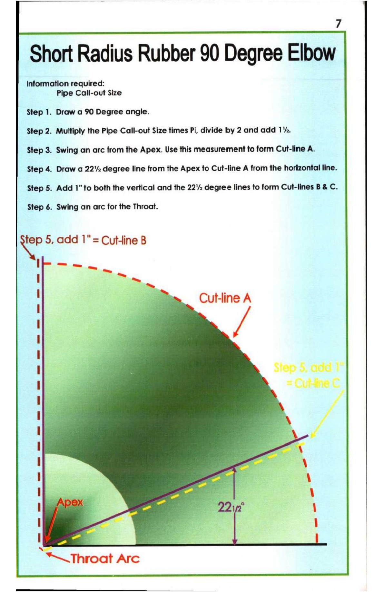

7. Short Radius Rubber 90 Degree Elbow

7
Short Radius Rubber 90 Degree Elbow
Information required:
Pipe Call-out Size
Step 1. Draw a 90 Degree angle.
Step 2. Multiply the Pipe Call-out Size times Pi, divide by 2 and add 14.
Step 3. Swing an arc from the Apex. Use this measurement to form Cut-line A.
Step 4. Draw a 222 degree line from the Apex to Cut-line A from the horizontal line.
Step 5. Add 1" to both the vertical and the 22’ degree lines to form Cut-lines B & C.
Step 6. Swing an arc for the Throat.
<4 5, add 1"= Cutline B
I —— a
-_
| =
— Cutline A
i
i} \
I 4
immer # — 22in° \
| - a
“NSN Throat Arc